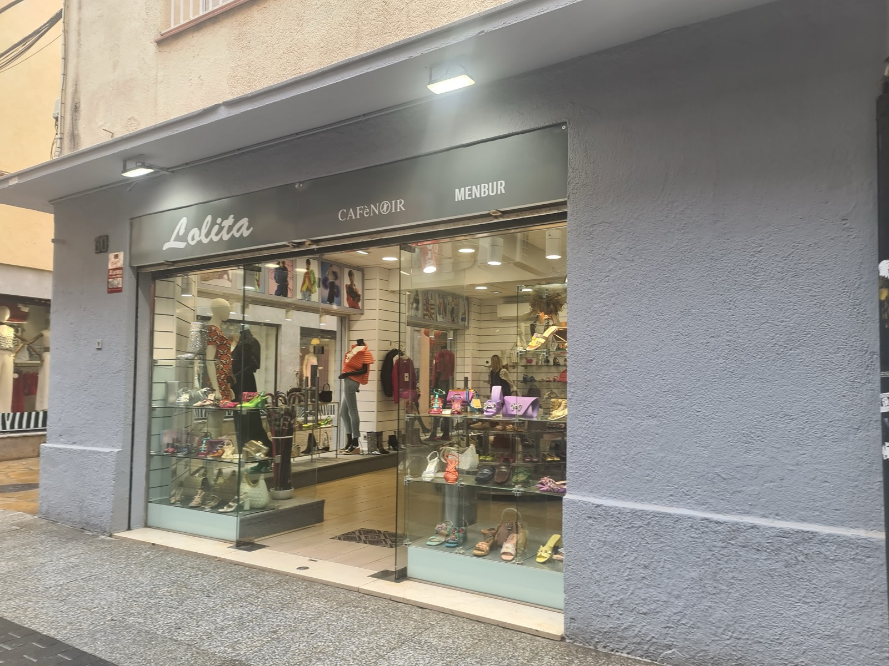
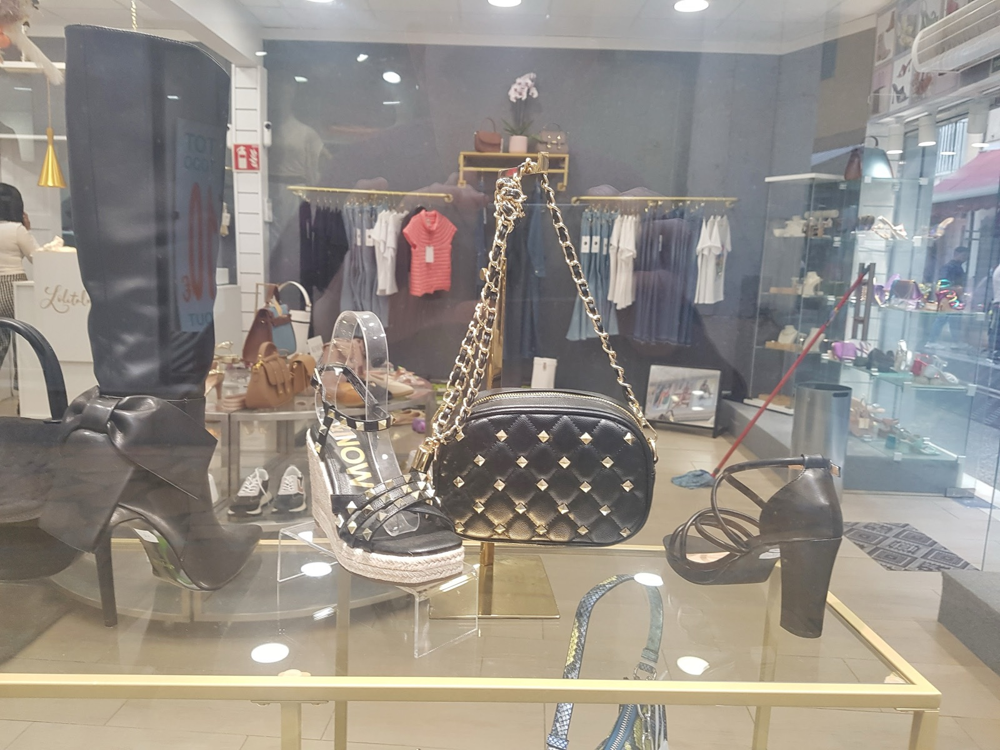
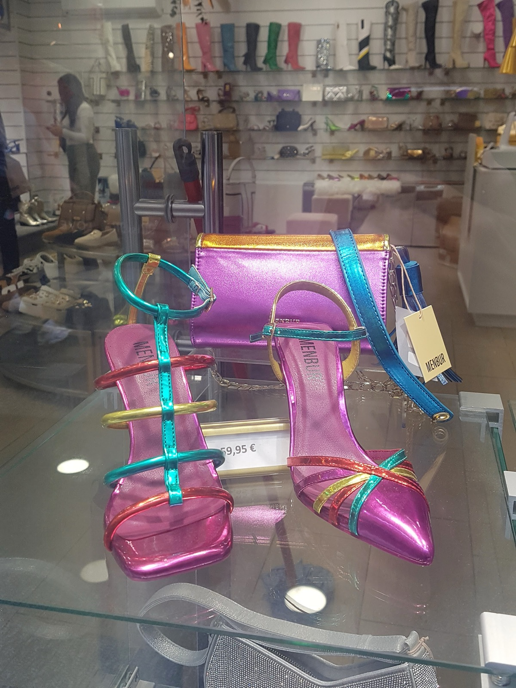
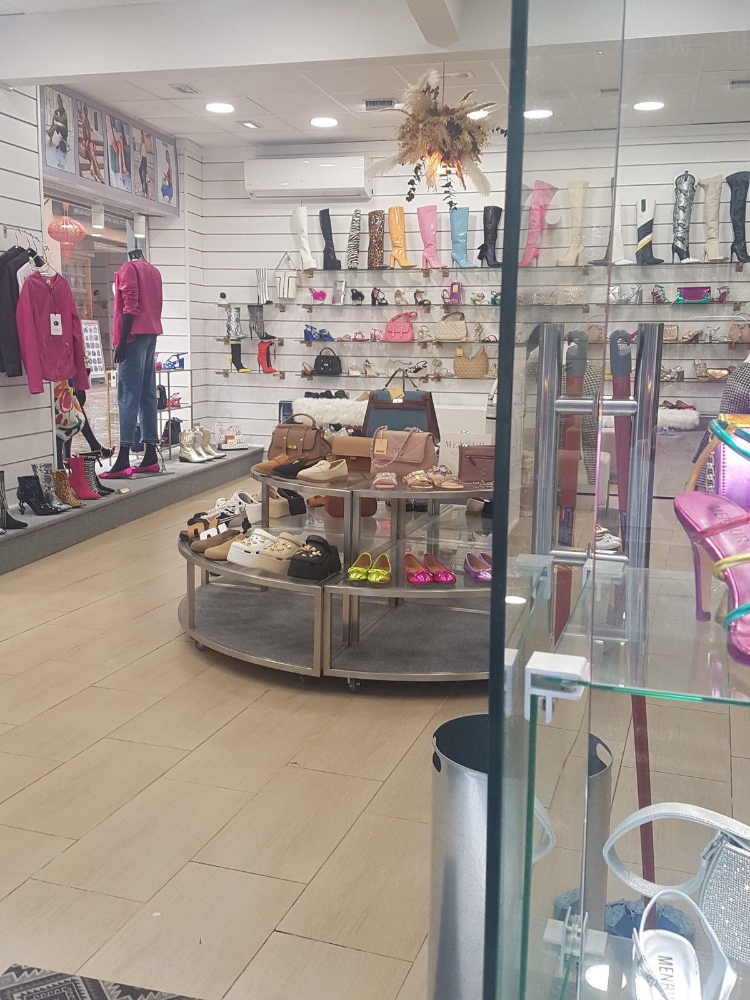
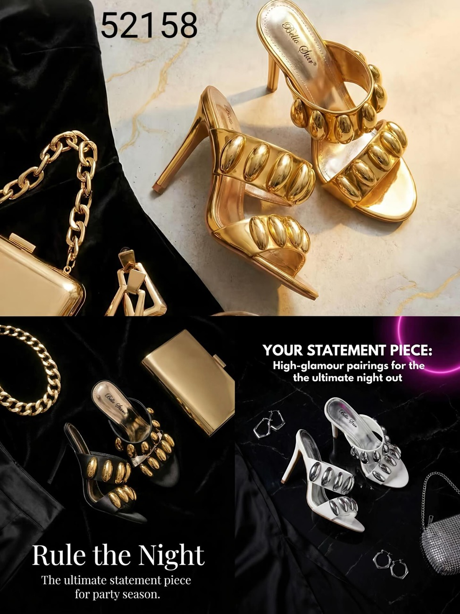
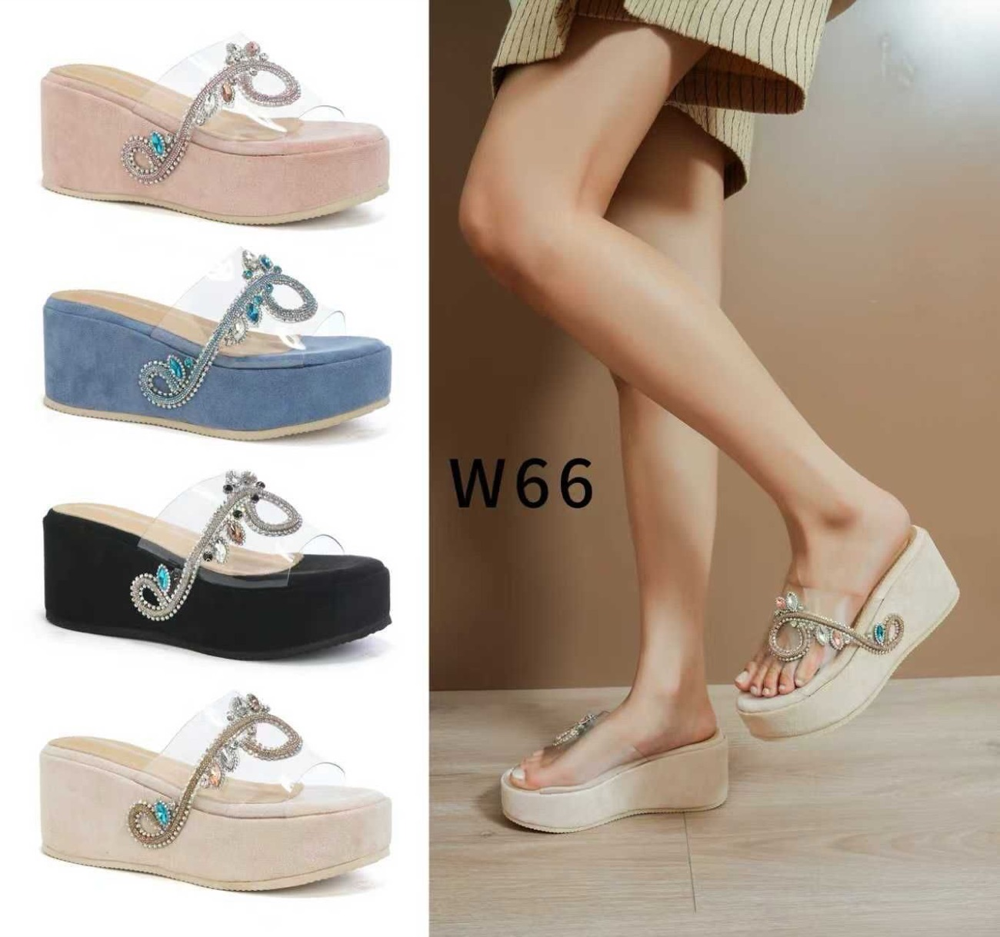

Calzado · Bolsos · Moda · Lloret de Mar
Lolita
Rule the night

Café NoirMenburLolita
Enciende el escaparate
01 · Interactivo
El escaparate
de noche
La tienda ha cerrado y solo queda tu linterna. Pásala por el cristal: cuando ilumines una pieza, te dirá qué es.





0 / 7 piezas descubiertas
02 · La percha
Recién colgado
Arrastra la barra: las piezas se balancean en sus perchas. Toca una para verla de cerca.
03 · En vídeo
Denim de pies a cabeza
La bota alta vaquera, girando en el podio de la tienda. Lo nuevo sale primero en nuestro Instagram.
@lolitashoes201204 · Visítanos
Carrer de la Vila, 30
En la calle comercial del centro de Lloret de Mar. Horario de temporada: escríbenos por Instagram y te lo confirmamos.